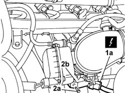

1056B44 AIR PRESSURE SENSOR - R.R.
- Path
- Procedures > 10 ENGINE > 1056 PETROL INJECTION SYSTEM > 1056B MULTI-POINT INJECTION SYSTEM (MPI) > 1056B44 AIR PRESSURE SENSOR - R.R.
- Kind
- repair procedure (removal / refitting; the operation number is the code)
- Applies to
- engines: 2.0 16v, 3.0 24V V6; all production periods
- Interactive page
- https://sloeber94.github.io/elrnDB-fUlss/en/#/179007018
Applies to: engines: 2.0 16v; all production periods
 Removing
Removing
 Refitting
RefittingOp. 5530B56 BATTERY DRIP TRAY COVER - R.R.
- Disconnect the negative battery terminal.
1. Disconnect the electrical connection for the air pressure sensor.
2. Undo the fixing bolts (2a) and remove the air pressure sensor (2b).

Applies to: engines: 2.0 16v; all production periods
Refitting
Removing- Place the air pressure sensor in position.
- Tighten the fixing bolt and renew the electrical connection disconnected previously.
- Connect the negative battery terminal.